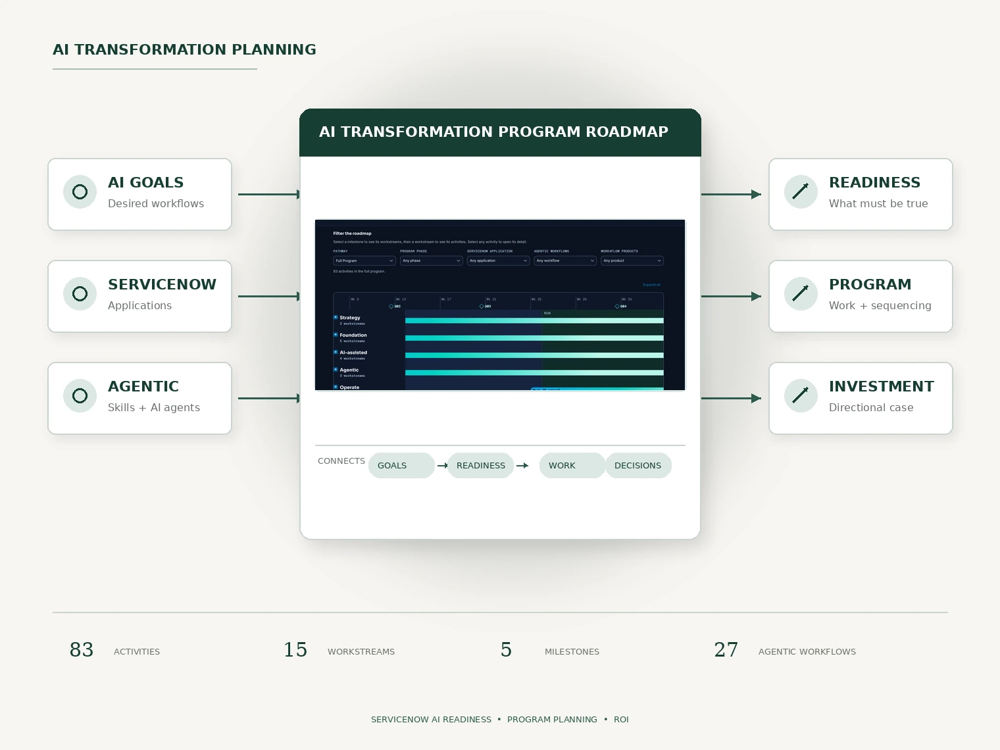

Designing an AI Transformation Planning Framework
I created a planning framework that connects enterprise AI goals to the readiness, capabilities, sequencing, and investment required across a ServiceNow ecosystem.
83 activities · 15 workstreams · 27 agentic workflows mapped
Read the case study